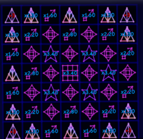
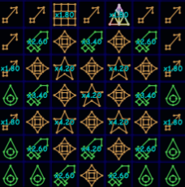

Solarians
Introduction & Notice
You have reached Solarians! This is the beginning of the long grind towards your next major goal. Before you get into the guide, there is some important and useful information to note below.
You should avoid any of the following actions:
- Spending any Flowers in Flower Shop II.
- Forgetting to purchase upgrades in all tabs of the Singularity chart, which is accessible via a slider. (i.e you can scroll left and right, up and down).
- Performing a Sunrise for a lower amount of Sunrise FM.
Guide Info & Formatting
This guide will use abbreviations, with the first use of them being marked in bold next to the full version i.e. Fighting Multi (FM). Names of resets and currencies will also be marked in bold for clarity.
Any extremely important information will be marked clearly in bold red text. Each Supernova Tier (SNT) will have its own section, but be sure to ask around for additional help, advice and alternative playstyles.
Basic Tutorial
Solarians is a minigame involving time and material management. You will be using the people known as Solarians to collect materials and form buffs for you to progress. These Solarians have speeds they work at, with Collection Speed for materials and Forming Speed for forming. You will quickly see there are two separate boards for these stats to be utilized. (You will unlock more tabs in the forming board as you go, pay attention to them)
You can select the number of Solarians you want to use at one time via the large board to the left of the collection. I would personally recommend only using the 100, 25, 5 or 1 options at any given time. Solarians can also be deployed by selecting the CAP button to the right of the add or remove buttons, which will deploy the maximum number of Solarians to instantly complete the collecting or forming.
The only way to progress and eventually beat this minigame is to increase your stage by fighting enemies. You will use your resources and Solarians to defeat these enemies using the Offense and Defense stats. Increasing your stage will provide you with temporary buffs that only apply when you reach that stage or higher. The main boosts to pay attention to here are Solar Shards and Sunrise Fighting Multi (SFM). SFM does not apply immediately, requiring a Sunrise to be performed. I personally recommend getting between 5x and 100x SFM each Sunrise, or as you see fit.
Your core gameplay loop will consist of gathering materials, spending materials on forming, increasing your best stage, and then finally sunrising to increase FM. As you repeat this, ensure to check the advanced and basic tabs of the solar upgrades board in order to find useful upgrades required for progression or centralization.
Constellation Setups
Before you proceed, you are recommended to update your constellation setups to one of the below. These are also available within the in-game help menu.
Table 0.1 | Basic Persistent Constellations

Later Persistent Constellations

Solarians Unlock
Solarians are unlocked via a board that appears at Supernova Tier 5 (SNT5) called the Singularity Chart. This board is next to the Solar Obelisk. You can obtain Singularities by Centralizing currencies in the game. Centralizing a currency requires an amount listed on the new Void Obelisk that appeared in the Light Forest upon reaching SNT5. Get enough Prestige Points for the Prestige Point Centralize to get the Solarians upgrade in the Singularity Chart.
The general gameplay loop is in the “Basic Tutorial” section of the guide, if you are struggling to understand what to do.
Stage 1 & Souls
Congratulations on making it this far. You did better than most. By defeating your first enemy you have gained a new currency called Souls. These can be spent on the blue upgrade board to the left of the main fighting board. It is recommended to prioritize Solarian Power earlier on since it offers much better boosts than upgrading collecting/forming individually, with Forming and Collecting Speed being left mostly even.
Solarian Power is a stat that boosts your Solarians working capability. For example, increasing Solarian Power by 10x will increase the Forming and Collecting Speed of each individual Solarian by 10x.
You will quickly get the second centralize and have to choose between Remnants and Soul Eater. For this split path Remnants is better because it unlocks 2 upgrades costing Remnants in the Remnants upgrade board. These give x3 to both Offense and Defense which helps you reach the next centralize around stage 5-6 much faster.
Sol Compression
Stage 10 is of great significance. It unlocks a new board known as Sol Compression, which generates Compressed Sol, of which the generation is boosted by compaction / compression. Sol Compression is similar to Dark Fruits but is tiered, and is spent into all available boosts of that tier automatically. This spending can be removed later on but it will do for now.
Tier 1 Challenges
Having played through Solarians for a good amount of time now you should be familiar with the gameplay loop. Make sure you have upgraded your constellation setup as high as possible.
With this stage, you have unlocked challenges which will grant challenge score, which buffs your fighting multiplier, and a currency called Golden Stars (the first challenge, Basic, will not grant any). These can be spent on the solar upgrades board in the golden star tab. You should do these after you get to SNT6 as this unlocks Bulk Completion for T1 Challenges.
Golden Stars can be spent on a few upgrades but some of these are locked. The red number above locked upgrades states the total amount of golden stars required to unlock said upgrades.
Maximum Stage for Bulk Completing Challenges:
- Basic: 20
- Cycle: 26
- Soul: 22
- Wall: 18
- Soulless: 18
- Limited: 28
- Strong: 32
- Evil: 7
Recommended Spending Order for Golden Stars:
- First 5: Golden Souls
- Next 5: Sword Constellation Cap
- Next 5: Soul Constellation Cap
- Next 5: Golden Souls
- Next 10: Forming
- Next 10: Collecting
- Last 10: Restore
Restoration Board
The Restoration Board is unlocked at Stage 20, which at the beginning only contains the advanced star. This is how you get beyond SNT 5 and use the new currency that comes with it, known as Mana. This currency passively generates and you can increase it by improving your collecting and other upgrades later on.
For the split path between Sword and Soul choose Sword first for the fighting boost to get the next centralize faster if you don’t already have it.
For the split path between Divine Robbery and Super Compression choose Super Compression as Divine Robbery only has a benefit after you sunset, and the next centralize is obtained before that happens.
Stage 40
Now, you will need to return to the restoration board where you should have met all the requirements necessary to obtain Supernova Tier 6. If you need Mana, you will need to Time Warp, go AFK for a bit of time, or waste time playing Planet Run.
You might struggle on star growth, in which case you should get the sunstone star growth upgrade to the highest you can, and also upgrade solar powered planetoid currencies to gain more stardust to get more growth. There also is a token upgrade in Planet Run that boosts star growth.
Supernova Tier 6
Upon reaching the requirements for the next star tier, you are able to increase your SNT and view the requirements for the next tier if available. Each time you do this you will gain new unlocks, as viewable alongside the other SNTs.
As seen on the restoration board, you now have an Offense/Defense boost that increases based on your star growth, and the first upgrade of the restore tab will now be unlocked. This upgrade will allow you to increase your mana gain. The next upgrade will be unlocked after reaching level 1 of the previous upgrade.
The other notable unlocks include the new Sunset reset in the Solar Obelisk, which is in the next section, as well as new remnant upgrades. I personally recommend pushing compression remnants whilst pushing stages, and then upgrade mana and divine souls before doing a sunset. You can refund the remnants by doing a sunrise at any time, but make sure to actually spend them.
If you missed the T1 Challenges section, you should now go and complete most of them, with the exception of the hard challenges, as this should be fairly quick, and is a nice boost to fighting multi.
If you get Stars and Fun centralize before Sunset then the split path between Best Offense and Super Absorb. It is recommended to choose Best Offense because it pushes stages directly, and is unaffected by wait time where Super Absorb is the opposite.
Sunset
READ THE FULL SECTION BELOW BEFORE DOING A SUNSET
Sunset is the second reset on the Solar Obelisk. It is an important reset, BUT YOU SHOULD NOT DO IT IMMEDIATELY, as your Divine Souls (DSouls / DS) gain on this reset is especially important. You can boost this from remnant upgrades unlocked at SNT6 and a new tier of Compression. You will also gain Darkness on this reset at a rate of 1:1 of current Mana.
It is recommended to do your first Sunset reset after obtaining SNT7, and both Stars and Fun centralizes, at around Stage 56-58. This should be for around 400+ Divine Souls and 1 Billion+ Darkness.
Following this, you should go to the singularity chart and select the souls tab. You should purchase all upgrades that cost 3-5 Divine Souls, as well as Compression II, Light Logs V and Souls II. You should then navigate to the Mana tab on the chart and purchase the ‘Violent’ upgrade for 6 Divine Souls. With the remaining Divines, go to the Souls board and select a low % from the selector at the bottom of the board to minimize the risk of accidentally spending them all at once. You should buy a mix of Compression, FM, Mana and Souls. Ignore Restoration Speed for now.
In terms of Darkness, you should upgrade your Constellations setup using it, prioritizing a new Grid tier over anything else, and then upgrading from cheapest to most expensive. Avoid spending Darkness on the Darkness tab until you are going to do a Sunset. A new upgrade will also now be unlocked in the forming tab called “Magic FM”, which is identical to the Light logs FM upgrade, but costs Mana. This makes it expensive so you should manually add and remove Solarians to it rather than leaving them on it permanently.
You will notice that the first level of upgrades in the restores tab of the restoration board give decorations for The Star, so go for those first levels if you want to make your area look more pleasant. Avoid leaving Solarians on restores that cost high amounts of Mana or Fragments.
Tier 2 Challenges
After performing a Sunset, you have unlocked T2 Challenges. Similar to T1 challenges, they have a stage requirement and provide a score that boosts FM. However, they provide a second type of stars known as Platinum Stars. Completions in the T2 challenge called ‘Challenging’ also automatically complete T1 challenges you may have missed. It is recommended to complete these after you have enough stats to where you can Sunset and get stages back quickly.
Supernova Tier 7
Upon reaching the requirements for SNT7 you can increase your supernova tier in the restoration board once again. This tier is notable for its benefits which include:
- A new star growth buff for restoration speed
- A new tab for the restoration board called the portal tab (read the next section for more info).
- The Sunset reset no longer resets basic levels in the forming tab (except compression) and the offense/defense sunstone upgrades. This is the ideal time to do your first sunset.
- You unlock a new upgrade in the solar board advanced tab to automate the last remnant upgrades (it is recommended to not keep the autobuyers on at this point since they can spend remnants on upgrades you may not need).
Portal Pieces
By reaching SNT7, you have unlocked a new tab on the Restoration board known as the Portal tab. When looking at it, you will notice you can now craft Portal Pieces (PPs). These are required to progress to the next major section of the game.
Every portal piece will require a set amount of resources and restoration to complete. Upon completion a Portal Piece will grant a 2x boost to the currency displayed next to the piece.
Many PPs, especially the later pieces can take a large amount of restoration, so it is a good idea to start investing into Restoration Speed as well as Souls in the Divine Souls in order to invest into Solarian Power.
You will notice that portal pieces 8 and 9 require a huge amount of fragments. The best way to improve your gain and get to the requirement is to:
- Purchase at least two upgrades of grass essence in the souls tab of the singularity chart
- Get the planet run grass essence upgrade
- Use time warps (and don’t sunrise until you build those pieces as sunrising resets your fragments)
Sunset - Stage 100 Help
Good job on making it this far, you should be more accustomed to solarians and its gameplay loop.
Make sure you are centralizing whenever possible and doing sunsets every time you get x5-x20 more Dsouls and darkness. You should spend these DSouls in soul bonuses and the singularity chart, whilst upgrading your constellations using the darkness you gained.
Repeat this process until you reach stage 100.
Portal Piece 10
Once you reach stage 107-110 you should be able to finally centralize Dark Matter. Doing so will teleport you to a small obby, clearing it and doing a Galactic will reward you with the Grassland Gem, which is needed to complete the 10th portal piece. Go and finish the portal to enter the new realm.
Appendix
Below are the tables of useful information that you probably want to have.
Centralize Requirements
| Centralized Currency | Stage Requirement | Solar Powered Requirement + Other |
|---|---|---|
| Prestige Points | Stages 0-1 | N/A |
| Crystals | Stages 1-2 | N/A |
| Steel | Stages 2-3 | N/A |
| Rocket Fuel | Stages 4-6 | N/A |
| Charge | Stages 14-16 | N/A |
| Anti-Grass | Stage 20 | N/A |
| Anonymity Points | Stage 21-23 | N/A |
| Oil | Stage 25-27 | N/A |
| Platinum | Stage 29-30 | N/A |
| Fun | Stage 58 | N/A |
| Stars | Stage 56-58 | N/A |
| SFRGT | Stage 85-86 | N/A |
| Dark Matter | Stage 103-105 | N/A |
Stage Bonuses
| Stage Number | Provided Bonus + Notes |
|---|---|
| Stage 2+ | 3x Sunrise FM Compounding, 2x Sunstone Compounding, 4x Solar Rays Compounding. |
| Stage 10+ | 3x Solar Shards Compounding |
| Stage 50+ | 1.5x Solar Flares Compounding |
| Stage 100+ | Sunrise FM per stage decreases to 1.05x per stage |
Singularity Order
| Centralized Currency | Suggested Upgrade | Additional Notes |
|---|---|---|
| Crystals | Remnants | See Section Stage 1 & Souls |
| Charge | Sword | See Section Restoration Board |
| Oil | Super Compression | See Section Restoration Board |
| Stars | Best Offense | See Section Supernova Tier 6 |
Supernova Requirements
| Supernova Tier | Stage Requirement | Additional Notes |
|---|---|---|
| SNT6 | Approx. Stage 38 | Rank 0 Growth |
| SNT7 | Approx. Stage 54 | Rank 2 Growth |
Upgrade Unlock List
| Upgrade Name | Unlock Requirement | Additional Notes + Descriptions |
|---|---|---|
| Solar Ray Generation | Stage 3 | Generates .1% of solar rays earned on supernova per second |
| Sunstone Offense | Stage 4 | Increases fighting offense by +10% per level |
| Sunstone Defense | Stage 4 | Increases fighting defense by +10% per level |
| Solar Shards Updater | Stage 5 | Automatically updates best solar shards on supernova |
| Solar Flares Generator Generation | Stage 6 | Passively increases solar flare generation based on your current star tier |
| Constellation Locking | Stage 8 | Allows locking the constellation grid which prevents it from being modified. Star constellations are more powerful while the grid is locked. |
| Sunstone Solar Shards | Stage 10 | Increases solar shards earned by +10% per level |
| Solar Idler Time | Stage 12 | Divides The Solar Idler's trigger time /(Level + 1) ^ 2 -> /(Level + 2) ^ 2 |
| Remnants Autobuy I | Stage 14 | Autobuys the first three remnant upgrades |
| Solar Powered Platinum | Stage 20 | Increases platinum earned by 100x per level |
| Solar Powered SFRGT | Stage 50 | Increases SFRGT earned by 1,000,000x per level |
| Remnants Autobuy II | SNT7 | Autobuys the next three remnant upgrades |
Portal Piece Costs
| Portal Piece Number | Portal Piece Cost | Portal Piece Reward |
|---|---|---|
| PP1 | 10 Grass Essence, 100M (1e8) Portal Stones, 1B (1e9) Mana | 2x Mana |
| PP2 | 10M (1e7) T1 Compressed Sol, 1B (1e9) Portal Stones, 10B (1e10) Mana | 2x Compression Speed |
| PP3 | 1B (1e9) Souls, 10B (1e10) Portal Stones, 100B (1e11) Mana | 2x Divine Souls |
| PP4 | 1T (1e12) Fragments, 100B (1e11) Portal Stones, 1T (1e12) Mana | 2x Grass Essence |
| PP5 | 10,000 Grass Essence, 1T (1e12) Portal Stones, 10T (1e13) Mana | 2x Mana |
| PP6 | 1T (1e12) T1 Compressed Sol, 10T (1e13) Portal Stones, 100T (1e14) Mana | 2x Compression Speed |
| PP7 | 10T (1e13) Souls, 100T (1e14) Portal Stones, 1Qa (1e15) Mana | 2x Divine Souls |
| PP8 | 2Qa (2e15) Fragments, 300T (3e14) Portal Stones, 3Qa (3e15) Mana | 2x Grass Essence |
| PP9 | 6Qa (6e15) Fragments, 800T (8e14) Portal Stones, 80Qa (8e16) Mana | - |
| PP10 | 1 Grassland Gem, 2Qa (2e15) Portal Stones, 200Qa (2e17) Mana | Portal Activated |